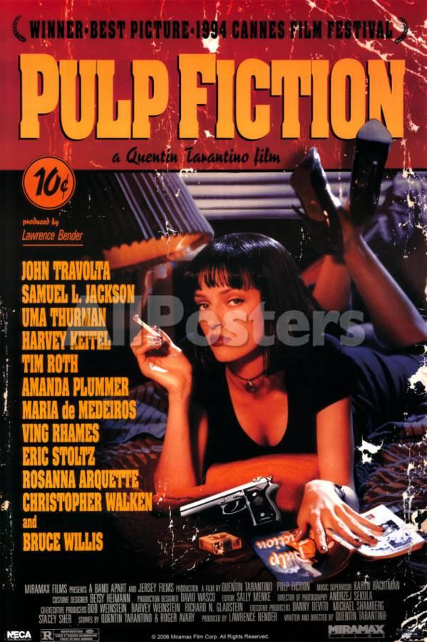

Pulp Fiction

Vincent Vega (John Travolta) and Jules Winnfield (Samuel L. Jackson) are hitmen with a penchant for philosophical discussions. In this ultra-hip, multi-strand crime movie, their storyline is interwoven with those of their boss, gangster Marsellus Wallace (Ving Rhames) ; his actress wife, Mia (Uma Thurman) ; struggling boxer Butch Coolidge (Bruce Willis) ; master fixer Winston Wolfe (Harvey Keitel) and a nervous pair of armed robbers, "Pumpkin" (Tim Roth) and "Honey Bunny" (Amanda Plummer).